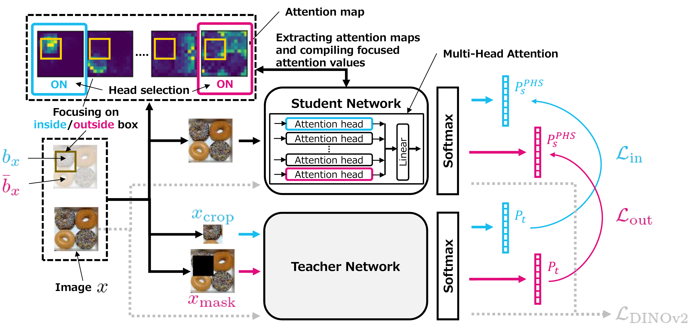
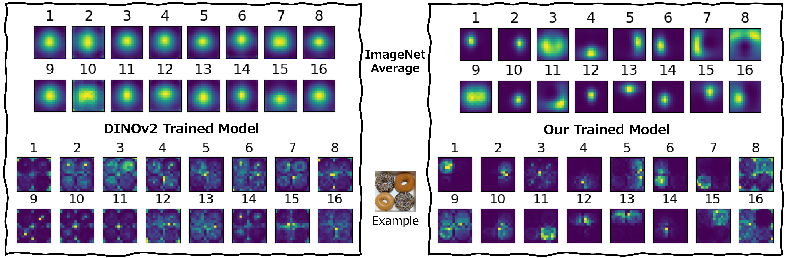

Self-supervised learning in Vision Transformer models, such as DINO, enables robust visual perception without requiring labeled data by leveraging large-scale image datasets. However, these models lack a focusing mechanism during training, resulting in perceptual representations that are often ambiguous or overly similar. In this work, we introduce two visual focusing loss functions designed to establish correspondence between the model's attention and specific regions within images. Specifically, we leverage the multi-head attention mechanism within the model to selectively steer the model's focus, leading to the emergence of spatial attention head specialization, characterized by diverse and spatially focused perceptual capabilities without requiring annotations. Through both qualitative and quantitative evaluations, we demonstrate that our method substantially increases the spatial selectivity and diversity of attention heads, improving both interpretability and performance on dense prediction tasks such as zero-shot image segmentation.
We introduce two visual focusing loss functions, \( \mathcal{L}_\mathrm{in} \) and \( \mathcal{L}_\mathrm{out} \), to enable the model to acquire the ability to focus on regions of interest. These two loss functions are designed to establish correspondence between the model's attention and specific regions within images in two complementary ways. We refer to this correspondence as region-to-focus correspondence (ReFoCo).


Comparison of attention maps produced by the DINOv2 trained model and our trained model. For each model, we show the attention maps averaged over the validation set of the ImageNet-1k and the attention maps obtained from a single example image. Existing learned perceptual representations (left) in individual attention heads often tend to be ambiguous or overly similar within the example image and across images in the dataset, which limits their interpretability. In contrast, our method (right) selectively steers the focus, leading to the emergence of diverse and spatially focused perceptual capabilities.
If you find this work useful, please cite:
@inproceedings{nozawa2026focus,
title = {Training Vision Transformers to Focus: Emergence of Spatial Attention Head Specialization},
author = {Nozawa, Yuji and Lin, Yu-Chieh and Ng, Youyang},
booktitle = {The Fortieth Annual Conference on Neural Information Processing Systems},
year = {2026}
}